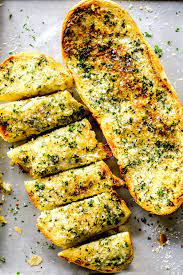

Garlic Bread

- PREP - 5 minutes
- COOK - 2 minutes
- ADDITIONAL - 3 minutes
- TOTAL - 10 minutes
- SERVES - 10 people
Ingredients
- 2 tablespoons mayonnaise
- ½ cup grated Parmesan cheese
- tablespoon garlic powder
- 1 (1 pound) loaf Italian bread
Directions
- Preheat the broiler.
- In a medium bowl, mix the mayonnaise, Parmesan cheese and garlic powder until thick.
- Slice the Italian bread in half lengthwise and spread each half with mayonnaise mixture. Place halves on a medium baking sheet.
- Broil 2 to 5 minutes, checking frequently, until mixture is bubbling and golden brown.
Home Page